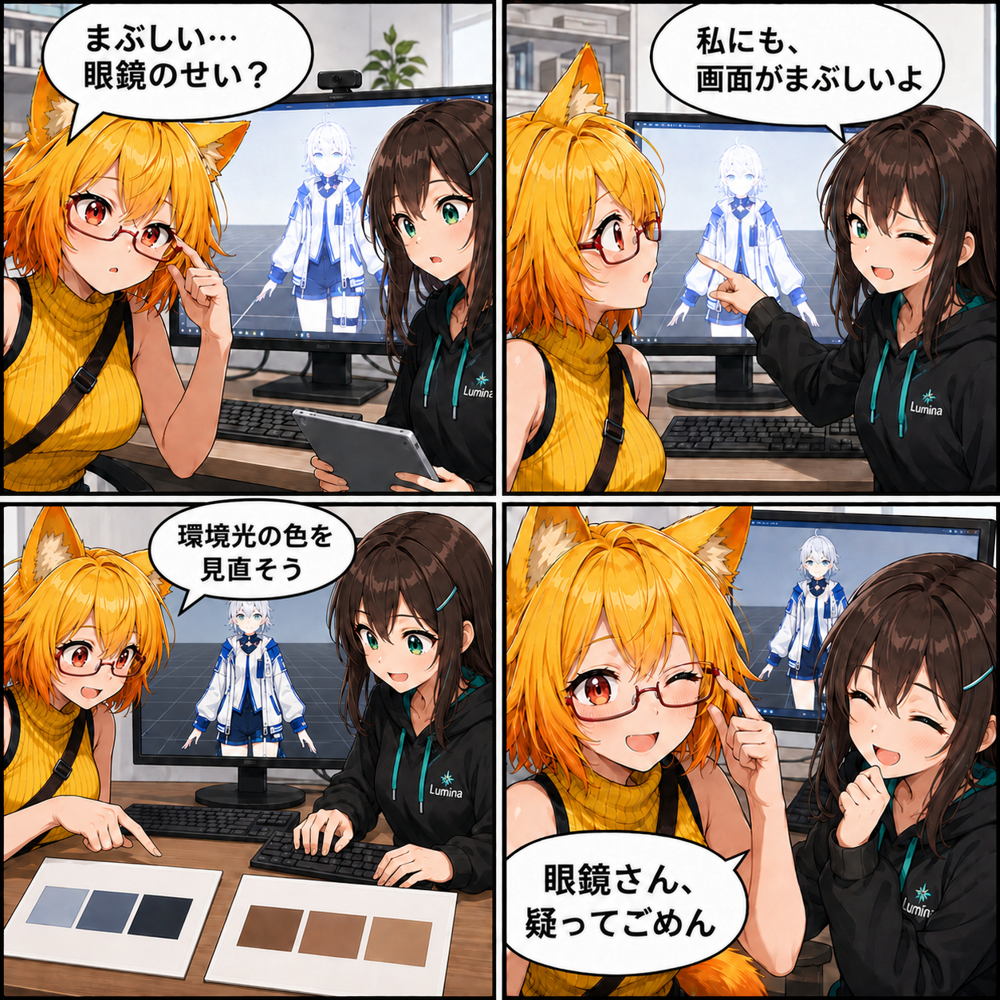

まぶしさの正体は環境光。Viewerの白飛びを見直した日
Viewerの画面が白っぽくまぶしくなる問題に対し、メインシーンの環境光の色設定を修正しました。空・水平線・地面に対応する3つの色を見直した、小さくても表示に関わる変更です。

まぶしい画面、どこを見直す？
アバターの見た目を確認する画面で、明るさが強すぎると服の色や陰影が分かりにくくなります。今回の修正対象は、アバター個別の素材ではなく、メインシーンに保存された環境光の色でした。コミットの説明も「ViewerのAmbient白飛びを修正」となっています。
環境光の色を3か所修正
変更されたのはMainSceneのRenderSettingsにある、空・水平線・地面に対応する3つの色です。空側のRGB値は約（2.640, 2.843, 3.249）から（0.212, 0.227, 0.259）へ、水平線側は約（0.354, 0.366, 0.377）から（0.114, 0.125, 0.133）へ、地面側は約（0.198, 0.193, 0.184）から（0.047, 0.043, 0.035）へ変更されました。
これらは保存された色の成分値であり、画面全体の明るさの測定値ではありません。「何倍暗くなった」といった性能・見え方の数値には置き換えず、修正した設定として記録します。
なぜ色だけでなく、設定の範囲も確認するのか
白っぽい表示を見ただけでは、どの設定を直したのかまでは分かりません。今回は差分を確認することで、環境光の強さの値（m_AmbientIntensity）は0.25、モード（m_AmbientMode）は0のままで、変更は3つの色だけだったと切り分けられます。露出の自動補正や新しい調整画面を追加した変更ではありません。
技術的なポイント
- 変更ファイルはAssets/Scenes/MainScene.unityの1つです。
- 更新された項目はm_AmbientSkyColor、m_AmbientEquatorColor、m_AmbientGroundColorです。
- 3項目ともRGBを変更し、アルファ値は1を維持しています。
- 環境光の強さとモードは、このコミットでは変更していません。
ほかにも進んだこと・補足
期間内のコミットはこの修正のみです。UIや背景制作などの未コミット変更はありますが、この期間に完成したと確認できないため、今回の実績には含めていません。前日の静的背景VCIビルダーとは別の、Viewerの表示設定を扱う回です。
この記事で確認したのはコミット済みの設定差分です。Unityや実機を起動して修正前後の画面を比較する検証は行っていません。すべての背景やアバターで白飛びが解消したという保証ではありません。
4コマの裏話
まぶしさを眼鏡のせいだと思ったろひが、ルミナと画面を確かめ、最後に眼鏡へ謝ります。二人の会話は修正内容を伝えるための創作です。画面内のアバターの濃淡も説明用のイメージで、実際の比較キャプチャではありません。今回は要望から成功報告へ進む形ではなく、小さな勘違いを回収する展開にしました。
まとめ
今回の変更は、メインシーンの環境光の色3項目です。設定の差分を小さく絞り、Viewerの白飛びを修正する意図を明確に残しました。
本日のひとこと： まぶしさを疑う前に、眼鏡を疑ってしまった。